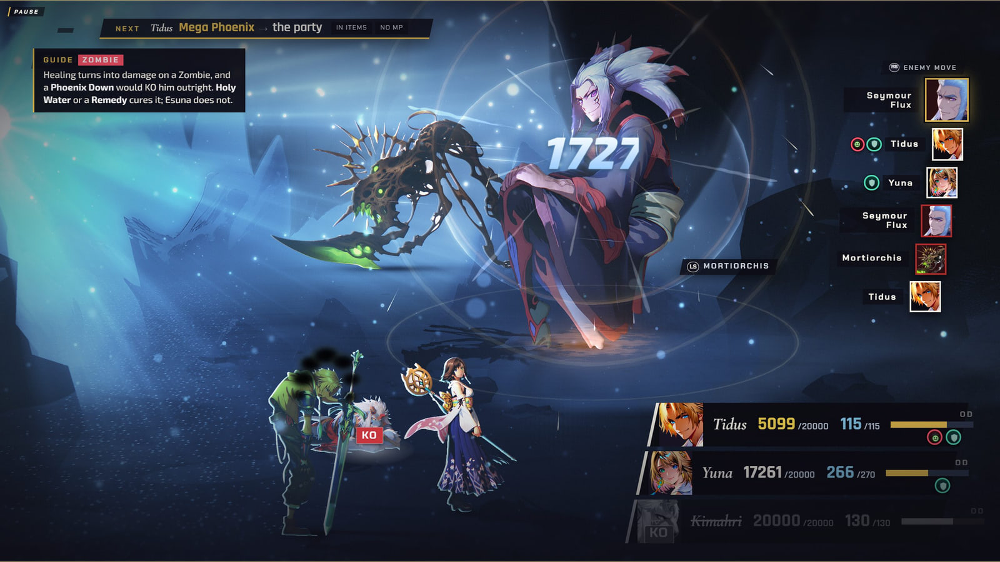
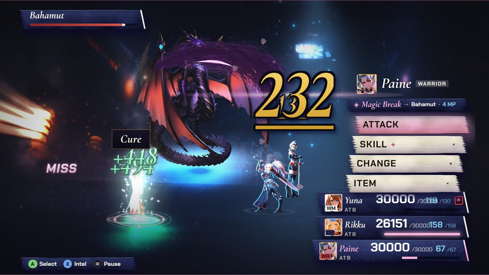
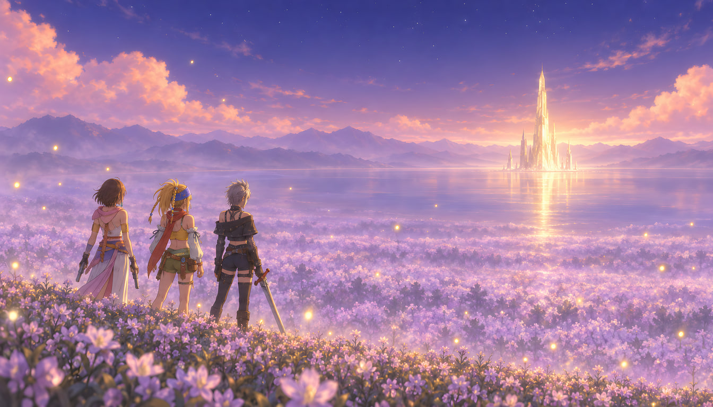
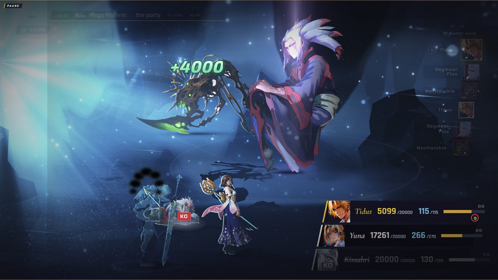
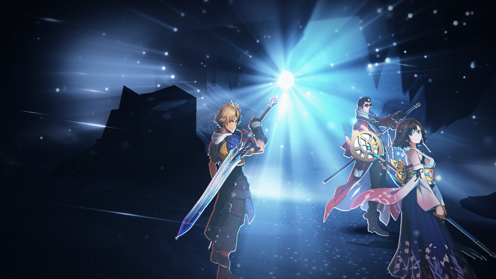
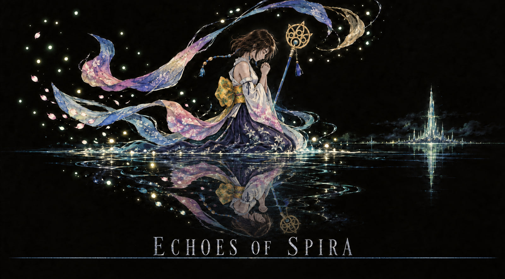
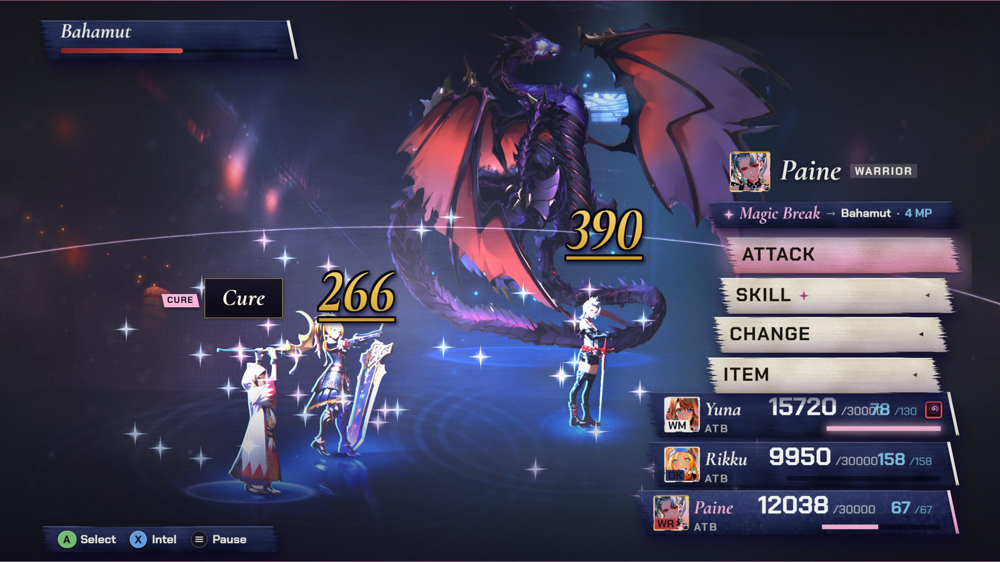
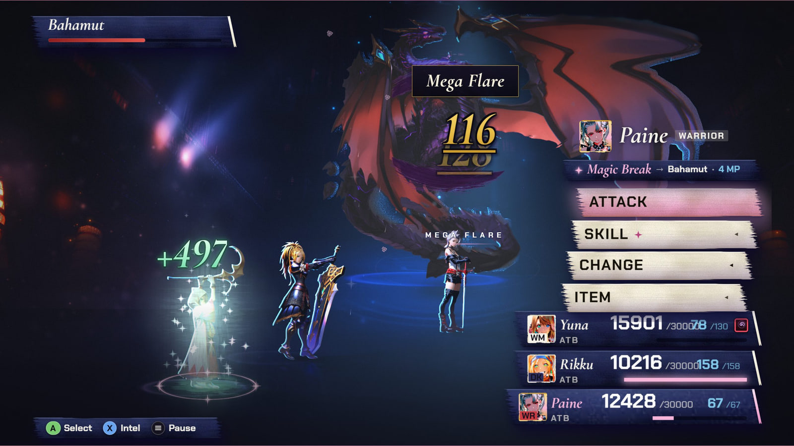

Echoesof Spira
Play the boss fights of Final Fantasy X and X-2, reimagined.
Final Fantasy X and X-2, their characters, worlds, and names are the property of Square Enix. This project is a non-commercial fan work, unaffiliated with Square Enix.



Screenshots and key art


X · Flames on Seymour

X · The party X · A hit lands


Key art · The Echo X-2 · Bahamut


X-2 · Cure

X-2 · Mega Flare Key art · Farplane
Every picture is a capture of the game itself with the interface hidden, or its own painted key art. They are web size; the game draws them larger. The frames show a build made for a live demo and may differ in small ways from the one online.
Fact sheet
- Name
- Echoes of Spira
- What it is
- An unofficial, non-commercial fan tribute that recreates five of the most memorable encounters from Final Fantasy X and Final Fantasy X-2 as a painted 2.5D game: the Conditional Turn-Based battles, the Sphere Grid, dresspheres, Overdrives, and the scenes around each fight.
- The five fights
- Final Fantasy X (CTB): Seymour Flux and Mortiorchis, Lady Yunalesca, Braska's Final Aeon. Final Fantasy X-2 (ATB): Bahamut, Vegnagun and Shuyin.
- Plays in
- A web browser at echoesofspira.com. Free. Keyboard or gamepad.
- Built with
- TypeScript, Three.js and Vite. The battle engines are plain rules code that never draws anything; the screen only plays what they report.
- Status
- A free fan work, not for sale, unaffiliated with Square Enix.
- Source
- github.com/BaileyPillon/pyrefly-reprise. Questions can be asked there, as an issue.
Credits and legal
- Salamander Grand Piano Alexander Holm · CC BY 3.0
- Sonatina Symphonic Orchestra Mattias Westlund · CC Sampling Plus 1.0
- DRSKit 2.1 DrumGizmo team and Jes Eiler · CC BY 4.0
- Arvedi Auditorium impulse responses F. Miotello and colleagues · CC BY 4.0
- Thunderclap Richard Humphries · CC BY 4.0
- Bonfire ignition Work With Sounds / Werstas · CC BY 4.0
- Glass breaking Gravity Sound · CC BY 4.0
Licences: CC BY 4.0 creativecommons.org/licenses/by/4.0 · CC BY 3.0 creativecommons.org/licenses/by/3.0 · CC Sampling Plus 1.0 creativecommons.org/licenses/sampling+/1.0
The full list, with the sources and the changes we made, is in the game: Pause, Options, Credits.